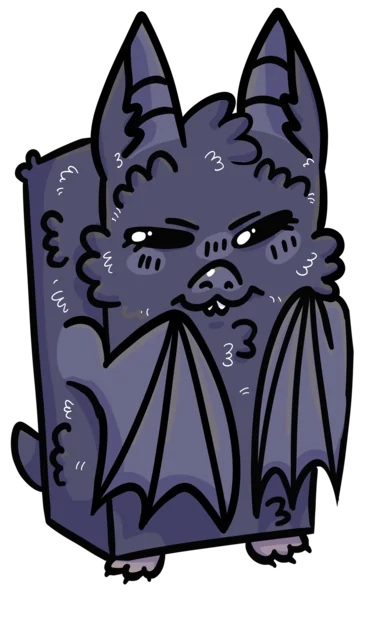
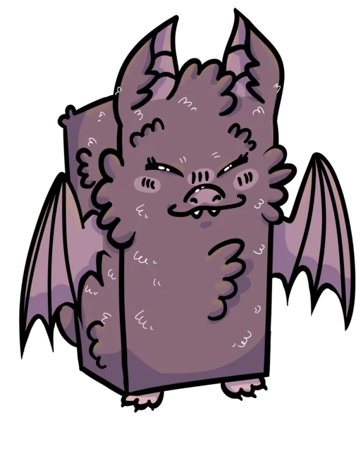
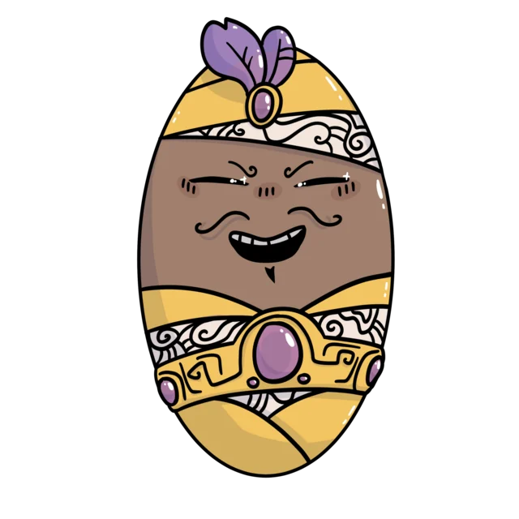

Ball is God?! Faites tourner la tour. Devenez l'impact.
Un jeu d'arcade hardcore de descente verticale où un glissement horizontal fait tourner la tour autour d'Espa en pleine chute. Ignorez les atterrissages sûrs, chargez un coup combo et traversez un monde mythique où un seul coup sans protection met fin à la partie.
Production active : dix scènes de lieux, boss, dialogues à embranchements et chemins de karma qui changent les règles du jeu.
Pivoterfaites glisser la tour autour d'Espa
Risquesauter trois atterrissages sûrs
Écraserpercer la plateforme
Dans la version actuelle
Le karma change plus que le dialogue.
Les chemins de karma clair, neutre et sombre modifient le comportement du bouclier, les signaux d'avertissement, l'agressivité des ennemis et les phases de boss : l'histoire change donc votre façon de jouer.
Statut de la version Production activeLes dix mondes de dialogue
Arrière-plans de dialogue des dix mondes, dans l'ordre de la descente, d'Ena à Deka.


Interface utilisateur de production actuelle
Sélection de niveau, dialogue et écrans de résultat dans la version actuelle.
Voici le flux actuel dans l'ordre où vous le rencontrez : sélection de niveau, dialogue, un choix marquant, puis la victoire ou un écran de défaite distinct. Chaque visuel ci-dessous utilise l'art du projet de production Unity.
La route céleste sélectionne les niveaux générés à travers dix chapitres de 100 niveaux.
Le menu de production cartographie dix lieux en chapitres de 100 niveaux et lance directement la partie sélectionnée.

 201
201Le dialogue se déroule dans le lieu.
Le portrait du personnage, l'illustration du lieu et la plaque de l'interlocuteur partagent un même cadre vertical.


Shash
Continuez alors, mais ne pensez pas que ce sera facile. Tria vous attend pour que tout ce qui précède semble être une simple bagatelle.
04 / Choix du jalon
La réponse fait partie de la descente.
Aux niveaux locaux 90 et 100, le panneau dédié demande de choisir entre épargner ou tuer avant que le dialogue ne conclue la partie.

Épargner
Tuer
05 / Menus de résultats
La victoire continue. La défaite revient au même défi.
La version actuelle comporte deux écrans de résultat distincts : PanelWin propose de rejouer ou de passer au niveau suivant, tandis que PanelOver ne garde qu'une action Rejouer sans équivoque.
Victoire · PanelWin
Descente terminée
 Rejouer
Suivant
Rejouer
Suivant
Rejouer
Suivant
Personnages des dialogues
Visages rencontrés en descendant.
Les 25 personnages disposant de paires de portraits de production valides (ouvert et fermé) figurent ci-dessous. Survolez une carte ou placez le focus dessus pour changer d'expression.










Aperçu du jeu
Ball is God?! est un jeu d'arcade hardcore où l'on tombe à travers une tour rotative.
L'idée
Guidez Espa le long d'une tour divine. Une seule erreur peut mettre fin à la partie, et vos grands choix changent la façon dont le monde se joue.
Version actuelle
Dix scènes de lieux, la génération procédurale des tours, le coup combo, le bouclier de balayage, les configurations de boss, les dialogues à embranchements, les menus de production et les portraits à expressions sont implémentés.
Public
Les joueurs qui aiment les jeux d'arcade mobiles exigeants, le rythme risque-récompense et les boss, avec une histoire à suivre.
Statut
Production active. Les travaux récents portent sur les systèmes d'exécution, l'art des mondes, les tests et la façon dont le jeu se joue sur téléphone.
Caractéristiques
Ce que vous faites dans Ball is God?!
Descente en glissant pour pivoter
Un glissement horizontal fait tourner la tour autour d'Espa en chute automatique, pour aligner les ouvertures, les dangers et les plateformes sûres.
Pression d'arcade hardcore
Un seul coup non paré met fin à la partie : il faut lire la tour et chronométrer chaque mouvement.
Boss et mondes mythiques
Dix scènes de lieux, chacune avec ses propres boss, portent l'histoire d'un monde à l'autre.
Des choix qui changent les règles
La miséricorde, la force et le karma modifient les dialogues, les règles du bouclier, l'agressivité des ennemis, les signaux d'attaque et les phases de boss.
Boucle de gameplay
Comment jouer à Ball is God?!
- Étape 01Lisez la descente
Repérez les prochaines plateformes, les trous et les dangers, et cherchez des moments sûrs pour agir pendant la chute.
- Étape 02Faites pivoter la tour
Un glissement horizontal fait tourner le monde autour d'Espa, pour aligner une plateforme sûre ou un passage délibéré.
- Étape 03Risquez et écrasez
Passez trois plateformes pour charger un coup combo, puis brisez les structures tandis que le bouclier encaisse une erreur mortelle.
- Étape 04Choisissez la conséquence
La miséricorde et la force façonnent le karma, le dialogue et les règles de jeu appliquées aux ennemis et aux boss.
Histoire / monde
Une tour mythique où vos choix vous suivent dans la descente.
Ball is God?! est né d'une fascination d'enfance pour les jeux d'arcade mobiles de descente verticale : repérer les ouvertures, réagir vite et survivre à l'instinct.
Le format pouvait porter davantage : des boss, des personnages de caractère, une histoire et une tension morale. Le projet actuel suit Espa à travers dix scènes de lieux et une troupe de personnages étranges, avec des choix qui changent à la fois l'histoire et le jeu.
L'objectif est donc devenu un jeu d'arcade de descente verticale simple, avec la pression d'un combat de boss et les conséquences d'un RPG axé sur l'histoire.
- Vision
- Un jeu d'arcade de tour rotative à l'histoire mythique
- Périmètre actuel du monde
- Dix lieux et configurations de boss
- Étape de l'histoire
- Brouillon complet de l'histoire longue
- État de production
- Production active
En un coup d'œil
Des commandes de glissement simples, avec une histoire qui change les règles.
Les commandes de glisser pour tourner sont immédiates. Le reste vient des mondes mythiques, des boss et des choix qui modifient le jeu.
La version actuelle combine déjà génération déterministe des tours, coups à risque et récompense, échec en un seul coup, boss, dialogues à embranchements et karma qui modifie le gameplay.
- Genre
- Arcade de descente verticale portée par l'histoire
- Plateforme visée
- iOS / Android
- Format des sessions
- Parties rapides basées sur l'habileté
- Studio
- WillowinWorlds
Télécharger les ressources
Ressources presse et créateurs pour Ball is God?!
Aperçus WebP pour la couverture presse, l'évaluation par les éditeurs et les références de pages de store. Les fichiers sources en pleine résolution sont disponibles sur demande.
Marque et personnages
L'icône du jeu ainsi que les 25 personnages actuels qui ont des portraits complets de dialogue de production. Les noms correspondent aux clés de localisation Unity.
EspaPortrait du personnage du joueur.
RevlaPortrait de dialogue de production.
ShashPortrait de dialogue de production.
ShushPortrait de dialogue de production.
ShishPortrait de dialogue de production.
GigoPortrait de dialogue de production.
GogaPortrait de dialogue de production.
GigaPortrait de dialogue de production.
AskoldPortrait de dialogue de production.
MirasPortrait de dialogue de production.
HihPortrait de dialogue de production.
HehPortrait de dialogue de production.
HahPortrait de dialogue de production.
MusyaPortrait de dialogue de production.
DusyaPortrait de dialogue de production.
SusyaPortrait de dialogue de production.
VladusPortrait de dialogue de production.
FrishaPortrait de dialogue de production.
LurenPortrait de dialogue de production.
KurenPortrait de dialogue de production.
Don YagonPortrait de dialogue de production.
LuryaPortrait de dialogue de production.
KhleyaPortrait de dialogue de production.
VaronPortrait de dialogue de production.
WhitePortrait de dialogue de production.
Arrière-plans de menu
Illustration de production actuelle utilisée par le système de sélection de niveau céleste.
 Menu céleste
Menu céleste
Mondes de descente verticale
Série complète des dix arrière-plans de lieux actuels, classés d'Ena à Deka.
 01 · Monde célesteFond de descente verticale Ena.
01 · Monde célesteFond de descente verticale Ena.
 02 · Monde spatialFond de descente verticale Dyo.
02 · Monde spatialFond de descente verticale Dyo.
 03 · Monde des tempêtesFond de descente verticale Tria.
03 · Monde des tempêtesFond de descente verticale Tria.
 04 · Monde de neigeFond de descente verticale Tessera.
04 · Monde de neigeFond de descente verticale Tessera.
 05 · Monde volcaniqueArrière-plan Pente ; animé dans le jeu.
05 · Monde volcaniqueArrière-plan Pente ; animé dans le jeu.
 06 · Monde océaniqueFond de descente verticale Eksi.
06 · Monde océaniqueFond de descente verticale Eksi.
 07 · Monde désertiqueFond de descente verticale Epta.
07 · Monde désertiqueFond de descente verticale Epta.
 08 · Monde forestierFond de descente verticale Ohto.
08 · Monde forestierFond de descente verticale Ohto.
 09 · Monde des grottesFond de descente verticale Ennea.
09 · Monde des grottesFond de descente verticale Ennea.
 10 · Monde de l'enferFond de descente verticale Deka.
10 · Monde de l'enferFond de descente verticale Deka.
Arrière-plans de l'arcade narrative
Série complète des lieux de dialogue : le Hall de Lumière ainsi que les arrière-plans des dix mondes.
 00 · Salle de LumièreFond de dialogue d'ouverture.
00 · Salle de LumièreFond de dialogue d'ouverture.
 01 · Dialogue du cielArrière-plan de l'histoire d'Ena.
01 · Dialogue du cielArrière-plan de l'histoire d'Ena.
 02 · Dialogue de l'espaceArrière-plan de l'histoire de Dyo.
02 · Dialogue de l'espaceArrière-plan de l'histoire de Dyo.
 03 · Dialogue de la tempêteArrière-plan de l'histoire de Tria.
03 · Dialogue de la tempêteArrière-plan de l'histoire de Tria.
 04 · Dialogue de la neigeArrière-plan de l'histoire de Tessera.
04 · Dialogue de la neigeArrière-plan de l'histoire de Tessera.
 05 · Dialogue du volcanArrière-plan de l'histoire de Pente.
05 · Dialogue du volcanArrière-plan de l'histoire de Pente.
 06 · Dialogue de l'océanArrière-plan de l'histoire d'Eksi.
06 · Dialogue de l'océanArrière-plan de l'histoire d'Eksi.
 07 · Dialogue du désertArrière-plan de l'histoire d'Epta.
07 · Dialogue du désertArrière-plan de l'histoire d'Epta.
 08 · Dialogue de la forêtArrière-plan de l'histoire d'Ohto.
08 · Dialogue de la forêtArrière-plan de l'histoire d'Ohto.
 09 · Dialogue de la grotteArrière-plan de l'histoire d'Ennea.
09 · Dialogue de la grotteArrière-plan de l'histoire d'Ennea.
 10 · Dialogue de l'enferArrière-plan de l'histoire de Deka.
10 · Dialogue de l'enferArrière-plan de l'histoire de Deka.
FAQ Ball is God?!
Questions fréquentes sur Ball is God?!
Quel genre de jeu est Ball is God?!
Un jeu d'arcade hardcore de descente verticale. Vous faites tourner une tour autour d'Espa en pleine chute, ignorez les atterrissages sûrs pour charger des coups et traversez des mondes mythiques.
Comment jouer à Ball is God?!
Faites glisser horizontalement pour faire tourner la tour, passez trois plateformes pour charger un coup et balayez verticalement lorsque le bouclier à temps de recharge doit absorber un coup mortel.
Ball is God?! est-il déjà sorti ?
Pas encore. Il est en production active : systèmes d'exécution, art des mondes, contenu narratif et tests. Il n'y a pas de date de sortie publique. Les plateformes visées sont iOS et Android.
Qu'est-ce qui rend Ball is God?! différent ?
Il mêle la pression d'arcade du risque et de la récompense à dix lieux et à un karma qui change les dialogues, les ennemis, les signaux d'attaque, les boucliers et les boss.
Qui crée Ball is God?!
WillowinWorlds, un studio indépendant qui crée des jeux mobiles de puzzle et d'arcade.
Ressources presse de Ball is God?! : puis-je les utiliser ?
Oui, pour la presse, l'évaluation par les éditeurs et les références de store. Les fichiers sources restent privés, sauf si vous nous les demandez.
Ball is God?! Devlog
Ce qui a changé et quand
- Surfaces du monde et validation des dangers
La présentation des personnages, la génération déterministe et les pièges à épines ont reçu une passe commune visuelle et de validation.
- Juillet 2026Révision de l'interface de production et des personnages
La sélection de niveaux, les commandes d'action partagées, le cadrage vertical des dialogues et les expressions de personnage par paires sont désormais en place.
- Février 2026Revue du périmètre du projet
L'équipe a réalisé une étape majeure d'intégration de l'histoire et a examiné l'intégralité du projet : dix mondes, des choix moraux, des boss et des fins multiples.
- Avril-mai 2025Réécriture de l'histoire et capacités
L'histoire complète a été réécrite, les capacités des personnages ont été améliorées et les conséquences morales sont devenues plus claires.
- Août 2024Début de la direction de l'histoire
L'équipe a décidé que Ball is God?! devait être plus qu'une simple descente d'arcade et a ajouté une histoire mythique et une vision de choix moraux.
- Juillet 2024Concept original
Le projet est né comme la première idée de jeu du studio : un jeu d'arcade vertical et rapide où l'on tombe à travers une tour divine.
- Version actuelleArcade et histoire dans une seule version
La descente de tour rotative, le coup combo, le bouclier par balayage, les boss, le dialogue et le karma fonctionnent désormais ensemble dans une seule version.